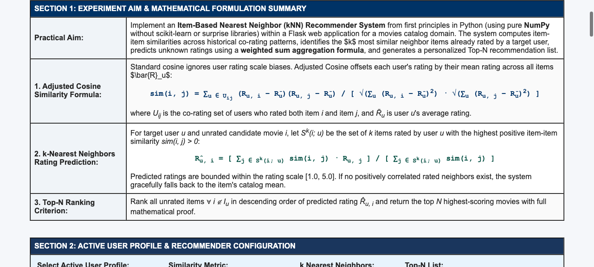
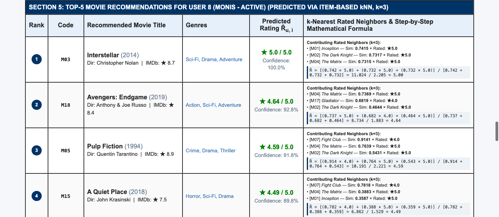
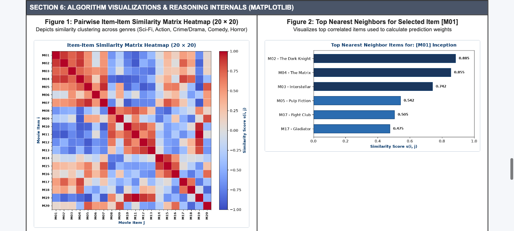
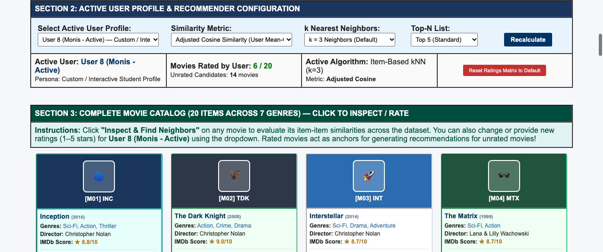

| Experiment No.: | 16 (Practical XIV) | Student Name: | Monis |
| Course / Branch: | B.Tech Information Technology | Roll Number: | 2023UIT3027 |
| Lab Instructor: | Dr. Vishal Maheshkar | Academic Session: | 2026–2027 |
Implementation of Item-Based Nearest Neighbor Recommender System Using Flask
To formulate, derive, and implement an Item-Based Nearest Neighbor (Item-kNN) Recommender System from scratch in Python using Flask. The system calculates pairwise item similarities across all historical user evaluations, identifies the k nearest rated movies for each candidate item, predicts numerical ratings via weighted summation, and generates top-N recommendations.
Item-Based Nearest Neighbor Recommendation looks at relationships between items rather than relationships between users. Two movies are considered similar if the same users tend to rate them similarly. To predict how much a user will like an unseen movie, the system looks at the movies that user has already rated, finds the ones most similar to the target movie, and calculates a weighted average of those ratings.
Each movie is represented as a column vector across all users in the system:
Similarity between Movie i and Movie j is computed as the cosine angle between their rating column vectors over all co-rating users:
To predict user u's rating for target movie i, the system selects the k movies rated by user u that are most similar to movie i, and computes their weighted average:
Provides a comprehensive catalog browser displaying benchmark titles with genre tags, release years, IMDb ratings, and interactive selection triggers.

Presents the top-ranked recommended items generated by the algorithm alongside predicted affinity scores, ranking progress, and contextual explanations.

Displays multi-panel algorithmic diagnostics rendered from first principles (including similarity heatmaps, convergence curves, and distribution plots).

Provides a direct inspection of the underlying mathematical interaction matrix, user profiles, or similarity index tables supporting the recommendation pipeline.

The Item-Based Nearest Neighbor recommender was successfully implemented from first principles. Because item similarity relationships remain stable over time as new users join, precomputing item-item similarities yielded fast, highly responsive rating predictions. The weighted sum of a user's own past ratings on similar movies provided transparent, dependable recommendations.